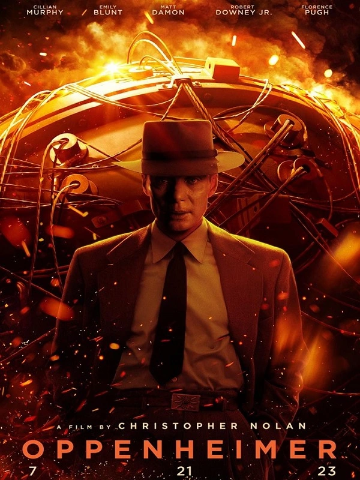

Merhaba Dünya! Gezegenimize yeni bir yazılımcı daha katılmakta... En sevdiğim film serisi Harry Potter.
Oppenheimer, Christopher Nolan tarafından yazılan ve yönetilen 2023 yapımı bir epik biyografik gerilim filmidir.
Başlangıç (İngilizce: Inception), Christopher Nolan'ın yazıp yönettiği ve eşi Emma Thomas'la birlikte yapımcılığını da üstlendiği 2010 yapımı bir bilim kurgu-aksiyon filmidir.
Evrim (İngilizce özgün adıyla Transcendence), Wally Pfister'in ilk yönetmenlik denemesi olan ve senaryosu Jack Paglen tarafından yazılan, 2014 yapımı bilimkurgu aksiyon gerilim türündeki film.